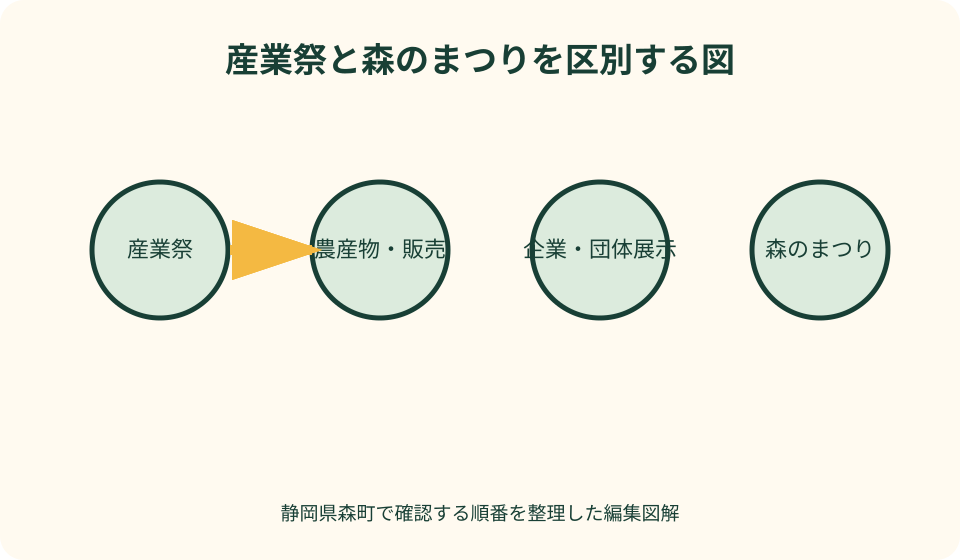
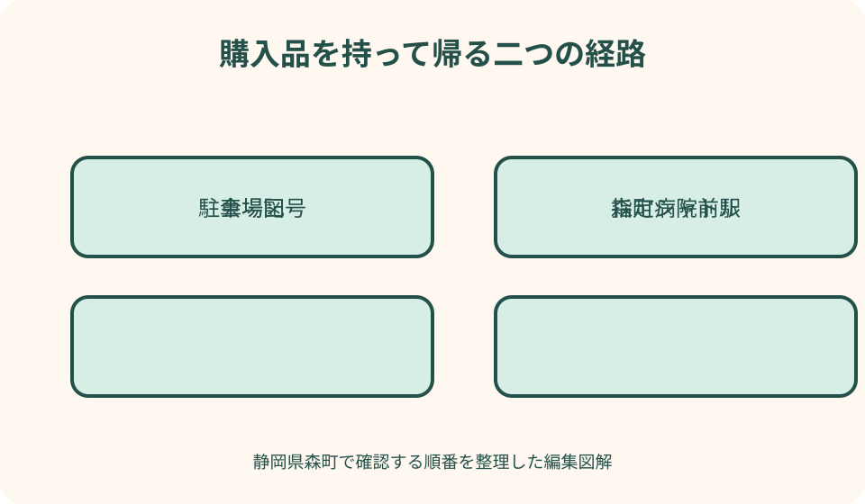

産業祭・農協祭・買い物｜最終確認 2026-08-10
静岡県森町・もりもり2万人まつり＆農協祭｜出店・駐車・シャトル確認ガイド
もりもり2万人まつり＆農協祭は、森町公式が展示即売、地元企業の紹介、ステージなどを案内する産業祭です。屋台を曳く地域祭礼『森のまつり』とは別です。出店者、販売品、駐車場、シャトルは回ごとに変わるため、過去の会場図を買い物リストにせず、当年の本ページ・チラシ表裏・駐車地図を一組で確認します。

森町産業祭と森のまつりを分ける
もりもり2万人まつり＆農協祭は、町の産業分野が当年ページを公開する産業催事です。展示即売、企業・団体のPR、農産物、ステージなどが一つの会場に集まります。
森のまつりは、神社への奉納や屋台の曳き廻しを伴う地域の祭礼です。名称に同じ『森』『まつり』が入っても、主催、時期、会場、交通案内は別です。
森の石松まつりも別の行事です。検索結果でチラシやシャトル地図が見つかったら、タイトル、回次、開催年、問合せ先を見てから使います。
観光協会の年間行事では、森のまつりと産業祭が別項目になっています。ここを最初の照合に使い、個別の当年ページへ進みます。
この記事でいう屋台は祭礼の山車ではなく、文脈により飲食販売の出店を指す場合があります。混乱を避けるため、販売は『ブース』、祭礼は『屋台』と書き分けます。
当年ページは三つの資料まで開く
最初に町公式の産業イベント一覧から最新回を探します。検索エンジンが古い回を先に出しても、一覧上の回次と開催年を照合します。
本ページでは開催概要、会場、主な内容、アクセス、問合せ先を確認します。本文に『随時更新』等があれば、保存画像だけでなく出発前にページを開き直します。
次にチラシの表面で全体の催し、ステージ、注意事項を見ます。チラシ裏面や別紙でブース番号と出店品、会場配置を確認します。
三つ目が駐車・シャトル地図です。一般車用の駐車区画、会場、巡回経路、徒歩入口を見ます。出店者用や関係者用区画を一般来場者用と取り違えません。
三資料の開催年がそろわなければ予定へ入れません。本ページだけ最新で、地図が前年ということもあり得るため、ファイル名と図中の回次まで確認します。
会場とお祭り広場の使われ方を読む
過去回では森町文化会館のお祭り広場と駐車場が会場として案内されています。ただし次回も同一配置とは断定せず、当年の所在地と入口を確認します。
お祭り広場は文化会館の屋外施設です。普段の施設利用案内と、産業祭当日の会場運用は異なるため、通常の駐車場案内だけで入場経路を決めません。
会場図では、ステージ、販売ブース、休憩所、本部、トイレ、車両展示、喫煙所など、自分に必要な地点を先に印します。すべてのブースを順番に回る必要はありません。
消防車や農業機械など大きな展示がある年は、子どもが近づく方向と車両の出入口を確認します。展示物へ触れる条件は係員へ尋ねます。
文化会館内へ雨天時に入れるか、ステージが移るか、休憩所になるかは当年告知を見ます。屋外催事の来場者が館内すべてを自由に使えるとは考えません。
出店一覧を買い物保証にしない
過去回の出店一覧は、農産物、加工品、飲食、工芸、企業展示、行政・団体啓発など多様なブースがあることを理解する参考になります。次回の出店者名簿ではありません。
当年一覧が公開されたら、ブース番号、出店者、主な品目を一緒に保存します。名前が似た店や同じ商品分野があるため、番号を買い物メモへ付けます。
『主な出品物』は在庫確保を約束しません。農産物は収穫、飲食は仕込み、工芸品は点数に限りがあり、途中で売切れる可能性があります。
出店者の変更や欠席もあり得ます。一店だけを目的に遠方から行く場合は、当年の実行委員会または出店者自身の最新発信も確認します。
購入できなかった商品を探して搬入口や在庫置場へ入らず、係員へ再入荷予定を一度尋ね、なければ別のブースを選びます。

農産物は旬・表示・持ち帰りで選ぶ
農協祭では農産物や地場品が期待されますが、作物の種類と量はその年の生育や出店で変わります。前年に買えた野菜や果物を当年の定番として断定しません。
売場では生産者名、産地、内容量、保存方法、傷みやすさを表示で確認します。贈答用にする場合は箱、包装、配送の対応を販売者へ尋ねます。
葉物、果物、米、加工品では持ち帰りの重さと温度管理が違います。会場前半で重い品を買うなら、折りたたみ袋や保冷材だけでなく、帰りまで持てる量へ絞ります。
試食や呈茶が過去にあっても当年実施を保証しません。アレルギー、原材料、調理場所、子どもへ与えてよいかは提供者へその場で確認します。
安さだけで大量購入せず、家庭で保存・消費できる量を決めます。森町の生産者との会話を妨げない範囲で、食べ方や保存を聞くことも買い物の一部です。
ステージは時刻と会場変更を照合する
ステージ内容は回ごとに変わります。出演者、順番、開始見込みは当年チラシで確認し、過去の出演やマスコット登場を次回の予定にしません。
一つの演目を見るなら、開始より前に観覧区域と立入禁止線を確認します。最前列を取るため通路や車椅子区域を塞ぎません。
演目は進行、天候、会場事情で動く可能性があります。ステージだけを目的にする人は、当日の本部案内や放送を確認し、変更を受け入れられる行程にします。
雨天に館内へ移る年があっても、毎回同じとは限りません。屋外継続、会場変更、中止のどれかを当年の公式発表で見ます。
出演者の写真や動画は、主催者と出演団体のルールに従います。子どもの出演、音源、演技を無断で長時間配信しません。
指定駐車場とシャトルを一つの経路で選ぶ
過去回では会場から離れた複数の指定駐車場をシャトルが巡回した例があります。次回も同じ企業、役場、河川敷を使えるとは限らないため、当年地図だけを使います。
駐車場は近さではなく、進入経路、出庫方向、シャトル乗り場、運行時間で選びます。地図上のアルファベットや番号と現地看板を照合します。
シャトルの巡回間隔は交通状況でずれる可能性があります。到着直後に必ず乗れる想定を置かず、待ち時間、乗降、会場までを開会時刻へ足します。
帰りは行きと同じバスが同じ順番で駐車場へ着くとは限りません。乗車前に行先表示と自分の駐車場記号を係員へ確認します。
シャトル終了間際まで買い物を続けず、一本分以上の余裕で乗り場へ戻ります。乗り遅れた場合に会場から駐車場へ安全に歩けると決めつけません。
天浜線なら森町病院前駅を当年案内で確認
過去の町公式アクセスでは、天浜線の森町病院前駅から会場へ歩く案内があります。訪問年の会場が同じかを確認してから降車駅を選びます。
天浜線公式で往復列車、運賃、駅設備、乗車方法を確認します。産業祭のための臨時便や増結があると推測しません。
駅から近くても、会場入口、横断、列、荷物を抱えた帰りでは時間がかかります。帰りの列車へ余裕を持って会場を出ます。
農産物や工芸品を買う人は、列車内で自立する袋、液漏れしない包装、他の乗客の通路を塞がない大きさを選びます。
遠州森駅や戸綿駅が地図に見えても、最寄りと決めません。当年チラシに示された鉄道アクセスと、自宅側の乗継を比べます。
子連れは会場を一周しない
子どもと行く場合、最初に本部、トイレ、休憩所、迷子対応、救護の位置を会場図で確認します。ブースへ並ぶ前に家族で集合場所を決めます。
ベビーカーは通路の混雑、コード、段差、飲食列で動きにくくなります。置き場所が公式に示されなければ、勝手に本部横や出入口へ置きません。
車両展示や体験は触れてよい範囲を係員へ確認します。農業機械、消防車、工具などへ子どもだけで近づけません。
ステージ、買い物、食事、体験の四つを全部必須にせず、子どもの主目的を一つ決めます。昼寝や空腹が来る前に帰る時刻を先に置きます。
迷子札には公開不要な個人情報を外から見える形で書かず、保護者の連絡先を内側へ入れます。迷った場合は走り回らず、本部と係員へ知らせます。
現金・支払い・荷物を小さく管理する
会場全体で同じ決済方法が使えるとは限りません。各ブースの表示を確認し、少額の現金と財布を分けて持ちます。高額紙幣だけに頼りません。
ATMが会場内にある、両替してもらえると考えず、交通費と帰宅用のお金を買い物予算から分けます。子どもへ持たせる額も先に決めます。
財布、スマートフォン、車の鍵は出し入れの多い買い物袋へ入れません。身体側のファスナー付き場所へ保管します。
重い農産物、汁のある食品、壊れやすい工芸品は袋を分けます。持参したキャリーカートを使えるかは、混雑通路や会場ルールを確認します。
購入品を無人の休憩席やシャトル乗り場へ置いて次の買い物へ行きません。持てる量を超えたら、会場を出る時刻を早めます。

食事とアレルギーを出店名だけで判断しない
グルメの出店は当年一覧で確認します。店名や料理名が同じでも、材料、調理油、トッピング、提供量が普段の店舗と同じとは限りません。
アレルギーがある人は、忙しい販売者へ曖昧な質問をせず、対象原材料と共用器具を具体的に尋ねます。確認できなければ食べない代案を持ちます。
食事席が満席でも、通路、展示車両のそば、シャトル列で食べません。会場図の休憩所か、持ち帰り可能な商品を選びます。
温かい食品と冷たい品を長時間持ち歩かず、購入後の時間と気温を考えます。土産用にする場合は販売者が示す保存方法を守ります。
ごみは分別表示へ従います。販売ブースが自店容器を回収する場合もあり、会場の一つの箱へすべて入れません。
雨天・荒天・中止を項目別に見る
過去回には雨天実施・荒天中止とされた例がありますが、次回も同じ基準とは断定しません。当年チラシの開催条件を読みます。
イベント全体が実施でも、屋外ステージ、車両展示、一部体験、シャトル、出店が変更になる場合があります。『開催』の一語だけで全内容を期待しません。
中止や変更の発表先、発表見込み、問合せ先を前日に確認します。出発後も町公式の最新更新と会場放送を見ます。
雨具は両手が使える物を基本にし、傘を通路やテント内で振り回しません。購入品を守る防水袋も準備します。
警報や交通障害で中止なら、会場周辺まで行って出店者を探しません。施設の通常営業も確認できなければ、森町訪問自体を延期します。
帰路はシャトル終了・列車・荷物から逆算
車の人は、シャトル乗り場へ並び始める時刻を先に決めます。閉会時刻とシャトル最終運行が同じだと決めず、当年案内を確認します。
鉄道の人は帰りの列車を二候補選び、早い便へ歩き出します。買い物列や抽選結果を待つため最後の一本だけに依存しません。
購入品を詰め直す場所は通路外の休憩区域にします。シャトルへ乗る直前に袋が破れないよう、重さを分け、両手の片方を空けます。
子連れや高齢者が疲れたら、予定したステージを残しても帰ります。会場を出てから駐車場または駅までが帰路の一部です。
駐車場から道路へ出るときはシャトル、歩行者、他車の誘導へ従います。買った物を確認しながら運転せず、安全な場所へ着いてから整理します。
良い点
森町産業祭は、農産物、商工業、地域団体、行政、ステージが同じ会場に集まり、町の産業を短時間で広く知れる機会です。
町公式が個別ページ、会場チラシ、出店一覧、駐車地図を公開した回では、来場者が目的別に準備できます。一次情報へ戻りやすい催事です。
指定駐車場とシャトル、天浜線という複数の移動案を検討できます。会場近くへ車を集中させずに来場する選択肢があります。
買うだけでなく、生産者、企業、団体へ商品や活動を短く尋ねられます。表示と混雑へ配慮すれば、森町の仕事を具体的に知れます。
注文したい点
最新回の入口を一つにし、開催概要、出店、会場図、駐車、シャトル、雨天更新へ順番に移れる構成にすると、古い回次との混同を減らせます。
PDFの会場図は、スマートフォン向けにブース名検索と現在地表示がある形式も併設してほしいところです。紙面を拡大せず目的地を探せます。
出店一覧へ、決済方法、アレルギー情報の確認先、売切れ時の表示、配送対応の有無を任意項目で加えると買い物を計画しやすくなります。
シャトルは各駐車場の乗り場写真、行先表示、最終乗車時刻、車椅子・ベビーカー対応を明示すると、初訪問の不安を減らせます。
雨天変更はステージ、出店、展示、駐車、シャトルを別々に更新し、変更のない項目も明示してほしいです。
代案・結論
当年の出店一覧が未公開なら、特定の農産物や店を目的に予定を確定しません。開催概要だけで行くなら、何も買えなくても町の展示を見る日と位置付けます。
満車なら非指定地を探さず別の指定駐車へ、シャトル待ちが長ければ買い物を減らし早く帰る、雨なら防水できる量だけ買うという代案を用意します。
森のまつりを見たい人は、産業祭と同じ日に屋台曳き廻しがあるとは考えず、別記事・別当年資料で訪問日を選びます。
結論として、最新回の本ページ、チラシ、出店一覧、駐車・シャトル地図を同じ年でそろえ、購入品を持って安全に帰れる範囲へ目的を絞ります。
大石の視点
産業祭の記事は、過去の出店名をたくさん並べるほど詳しく見えます。しかし次回に店がなければ、詳しさがそのまま誤案内になります。私は確認方法を記事の中心にします。
実際に買っていない農産物を甘かった、安かったとは書きません。生産者表示、保存、重さ、売切れという購入前の判断を具体的に示す方が実用的です。
会場へ着くことより、荷物を持ってシャトルか列車へ戻る方が難しい日があります。帰りを先に決めると、買いすぎと最終便への集中を減らせます。
森のまつりとの違いは名称の注釈だけでは足りません。祭礼は地域の進行、産業祭は展示と交流という目的の差を理解すれば、必要なマナーと持ち物も自然に変わります。
一つの商品が売り切れても、別の生産者の話や企業展示を見られます。買えた量より、森町で誰が何を作り、どう伝えているかを持ち帰る日になればよいと思います。
公式情報・確認先
掲載内容は次の一次情報を基礎に整理しました。営業、料金、催し、交通は変わるため、出発前または手続き前にリンク先で最新情報を確認してください。
- 森町産業祭 もりもり2万人まつり＆農協祭（静岡県森町、2026-08-10確認）
- イベント情報（静岡県森町、2026-08-10確認）
- 一般来場者 駐車場・シャトルバス運行路（静岡県森町、2026-08-10確認）
- お祭り広場（静岡県森町、2026-08-10確認）
- 四季のイベント（静岡県森町観光協会、2026-08-10確認）
- 森町病院前駅（天竜浜名湖鉄道、2026-08-10確認）